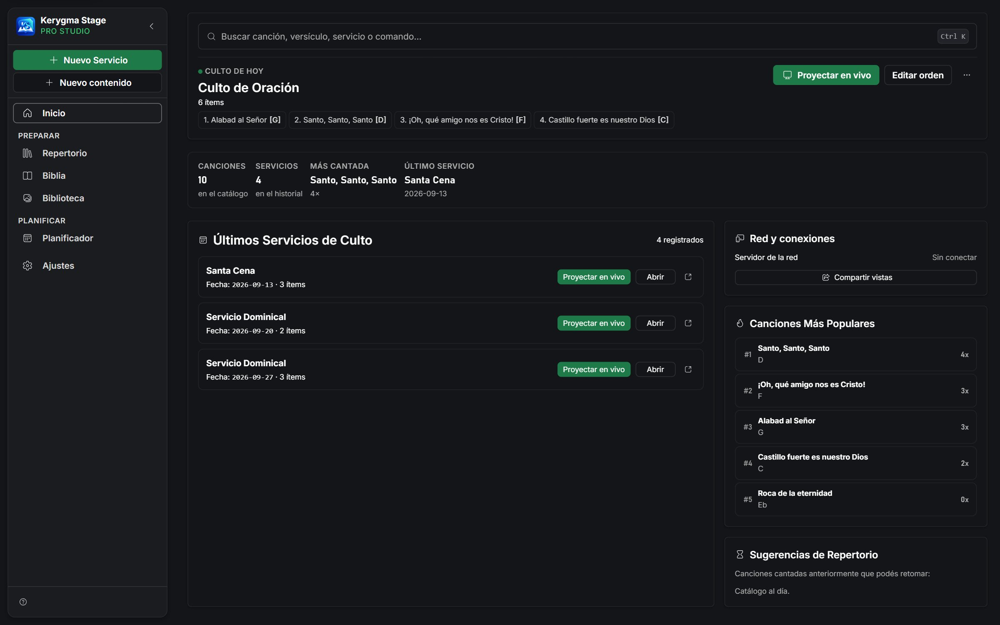

Caso de Estudio · Producto en uso real
Kerygma Stage
Reemplacé PowerPoint y las herramientas tipo ProPresenter con un software de proyección diseñado para el ritmo real de un culto: consola de operador separada de la pantalla del público, subtítulos en vivo 100% offline y detección de versículo por voz.

Contexto
De PowerPoint improvisado a un software propio
Muchas iglesias proyectan letras de canciones y versículos bíblicos durante el culto con PowerPoint, Google Slides o herramientas como ProPresenter — pensadas para presentaciones de oficina, o con un costo y complejidad que no siempre encajan con un equipo de voluntarios.
Investigué qué problemas reales enfrentaban los operadores de proyección — no solo los de mi propia iglesia, sino los diez problemas más comunes reportados por operadores en general — y usé esa investigación como base del producto, no mis propias suposiciones.
Kerygma Stage nació de esa investigación: un software de escritorio construido específicamente para proyectar en un culto en vivo, con las limitaciones reales de un voluntario operando bajo presión, sin internet garantizado, y con un público que nunca debe ver un error.
Mi rol
Diseño y desarrollo full-stack, de punta a punta
Diseñé la experiencia completa y construí tanto el frontend (React) como el backend nativo (Rust, sobre Tauri) — incluyendo el servidor local para control remoto y el motor de transcripción de voz en tiempo real.
- 1Investigación de los problemas reales de operadores de proyección
- 2Arquitectura de la aplicación de escritorio (Tauri + React + Rust)
- 3Diseño de interfaz y rediseño visual completo de la marca
- 4Implementación de subtítulos en vivo y detección de versículo por voz, 100% locales
Usuarios
Tres roles, un mismo culto en vivo
El sistema debía servir a personas con necesidades opuestas dentro del mismo servicio: quien opera, quien predica, y la congregación.
Operador
Elige y proyecta letras, versículos y anuncios en tiempo real. Necesita ver un adelanto de lo que viene sin que el público lo vea todavía.
Predicador
Necesita su propia pantalla de confidencia con el texto actual, el siguiente y un cronómetro — sin depender de girarse hacia la pantalla del público.
Congregación
Ve únicamente la pantalla de proyección final: letras, versículos, anuncios y, cuando aplica, subtítulos en vivo.
El Problema
Herramientas genéricas para un trabajo que no lo es
Antes de diseñar nada, documenté los problemas que los operadores reportaban una y otra vez con PowerPoint, Google Slides y herramientas similares.
- 1El operador no puede ver por adelantado lo que está por proyectar sin que el público ya lo vea
- 2Los saltos de línea rompen letras y versículos largos en momentos incómodos
- 3Editar un error en vivo expone el error al público mientras se corrige
- 4Insertar un versículo o cita improvisada en medio del culto es lento
- 5El texto se vuelve ilegible sobre fondos de video con mucho movimiento
Comparativa
Antes y después
Una sola vista compartida: lo que el operador prepara es exactamente lo que ve el público.
Corregir un error en vivo significa que el público lo ve mientras se arregla.
Insertar un versículo fuera de guion implica salir de la presentación y buscar manualmente.
Vista previa y vista en vivo separadas: el operador prepara la siguiente diapositiva sin exponerla.
Edición en vivo sin salir de pantalla completa ni mostrar el cambio a medio hacer.
Buscador de Biblia y repertorio integrados, con un atajo tipo Ctrl+K para saltar a cualquier canción o versículo al instante.
Investigación
Diez problemas reales, no suposiciones
En vez de asumir qué necesitaba un operador de proyección, partí de una investigación de los diez problemas más comunes reportados por operadores de herramientas como PowerPoint, Google Slides y ProPresenter, y las diez funciones que más pedían.
Esa investigación se convirtió en la referencia para priorizar qué construir primero:
- 1Vista previa ciega antes de salir en vivo
- 2Saltos de línea que rompen letras y versículos largos
- 3Sin forma discreta de saltar entre elementos durante el culto
- 4No se puede editar en vivo sin exponer el cambio al público
- 5Pantalla de confidencia pobre o inexistente para quien predica
Prioricé por impacto real reportado, no por lo técnicamente más interesante de construir.
Principios
Reglas que guiaron cada decisión
- 1El público nunca ve un error ni un cambio a medio hacer
- 2El operador siempre puede ver por adelantado lo que sigue
- 3Todo debe funcionar sin conexión a internet
- 4Sugerir y confirmar, nunca automatizar una decisión en silencio
- 5La privacidad importa: el audio del culto nunca sale del dispositivo
- 6Un atajo de teclado para cada acción frecuente
- 7Quien predica necesita su propia pantalla, no la del público
- 8Cada función nueva se prueba con hardware real, no solo con tests
Proceso
Cuatro fases, de la investigación a un culto real
Investigación de pain points
Documenté los diez problemas más reportados por operadores de proyección en iglesias, y las funciones más pedidas, como base objetiva del roadmap.
Arquitectura preview/vivo
Diseñé la separación entre lo que prepara el operador y lo que efectivamente sale al público — el cambio estructural más grande frente a las herramientas genéricas.
Rediseño visual — Kerygma Stage
Rediseñé toda la identidad visual: acento verde, tipografía Inter, superficies planas sin efectos de vidrio, inspirado en herramientas como Linear y Vercel — pensado para uso prolongado bajo presión, no para impresionar en una demo.
Validación en cultos reales
Cada función se probó en un culto real antes de darla por terminada: micrófono real para subtítulos, celular real para el control remoto, monitor real para las salidas de proyección.
Diseño
Pantallas principales

Inicio: el culto de hoy y estadísticas del repertorio

Repertorio con etiquetas, tonalidad y BPM

Editor visual de diapositivas

Planificador: orden del culto por secciones

Biblia: búsqueda y reparto en diapositivas

Búsqueda global con Ctrl+K

Consola del operador

Consola en modo Matriz

Pantalla de proyección

Pantalla de confidencia (Stage Display)

Control remoto desde el celular

Ajustes de proyección y pantallas
Decisiones
Decisiones de diseño
Vista previa y vivo separados
La decisión de diseño más importante: nada llega al público hasta que el operador lo confirma explícitamente, incluso al editar en vivo.
Subtítulos 100% offline
Elegí un motor de transcripción local (Whisper) en vez de un servicio en la nube: el wifi de una iglesia no siempre es confiable, y el audio nunca debería salir del edificio.
Sugerir, no automatizar
Cuando el sistema detecta un versículo mencionado en voz alta, lo sugiere en un banner — nunca cambia la proyección por sí solo.
Control remoto por celular
Un servidor local permite operar ciertas funciones desde el teléfono, sin depender de estar frente a la consola principal.
Multi-monitor sin configuración
Cualquier salida adicional de proyección refleja automáticamente la misma pantalla, sin configurar nada por ventana — útil para salas de desborde.
Implementación
Cómo funciona por dentro
Construido con Tauri: interfaz en React sobre un backend nativo en Rust, lo que permite acceso real al sistema (micrófono, red local, archivos) sin empaquetar un navegador completo.
Los subtítulos y la detección de versículo por voz corren sobre un motor de transcripción local (whisper.cpp) integrado directamente en Rust — el audio se procesa en el dispositivo y nunca se envía a ningún servidor.
El control remoto usa un servidor HTTP y WebSocket local (Axum, en Rust) que expone una página web simple al celular del operador dentro de la misma red, sin depender de internet.
Resultados
De diapositivas improvisadas a un software hecho a su medida
3
Roles distintos servidos por la misma app: operador, predicador y congregación
100%
Del audio para subtítulos y detección de versículo se procesa en el dispositivo, sin nube
Semanal
Uso real en los cultos de Iglesia Hogar de Salvación y Alabanza
La aplicación sigue en desarrollo activo — cada parte de este roadmap se agrega y se valida directamente en los cultos de la iglesia que la usa, no en un entorno de prueba aislado.
Aprendizajes
Lo que me llevo
Diseñar para dos públicos a la vez
El operador y la congregación necesitan literalmente ver cosas distintas en el mismo instante. Esa tensión, no la estética, fue el problema de diseño central de todo el proyecto.
Offline no es una limitación, es una decisión de producto
El wifi de una iglesia no es confiable y el audio de un culto es sensible. Procesar todo localmente (subtítulos, detección de versículo) resultó ser más una ventaja de producto que una restricción técnica.
Sugerir y confirmar gana a automatizar
La primera versión de la detección de versículo por voz podía haber cambiado la proyección sola. Decidí que solo sugiriera y esperara confirmación — un error automático frente a toda una congregación es mucho peor que uno manual.
El hardware real revela lo que ningún test detecta
Permisos de micrófono bloqueados por Windows, un algoritmo de audio en tiempo real que generaba cortes, transcripción inconsistente de números hablados — ningún test unitario encontró estos problemas; probar con un micrófono y un celular reales sí.
Un rediseño visual también es una decisión de producto
Cambiar a una identidad más sobria (Kerygma Stage) no fue solo estética: una interfaz que se usa por horas, bajo presión, semana tras semana, necesita calma visual antes que impacto de primera impresión.
¿Tienes un proyecto?
Hablemos.